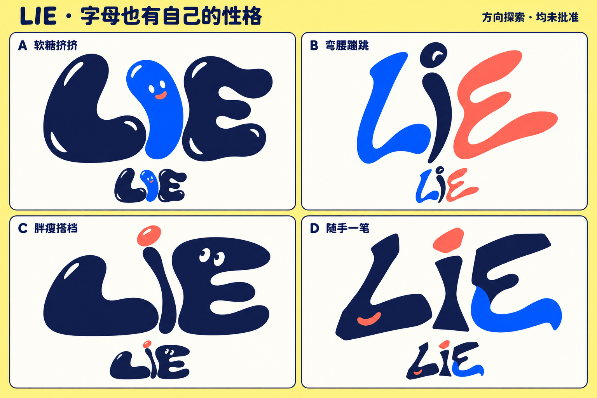

<!doctype html>
<html lang="zh-CN"><meta charset="utf-8"><title>LIE 变形字标方向探索</title><style>*{box-sizing:border-box}html,body{margin:0;background:#fff18a;color:#111b45;font-family:system-ui,-apple-system,'PingFang SC',sans-serif}main{max-width:1536px;margin:auto}img{display:block;width:100%;height:auto}footer{padding:16px 24px;background:#fffef7;font-size:14px;line-height:1.7;border-top:2px solid #111b45}strong{font-weight:800}</style><main><footer><strong>候选探索，尚未批准。</strong> 字母轮廓与负形为本轮重点；本图是 imagegen 概念稿，选定后再精修为正式字标，不替换产品中的现有 Logo。</footer></main></html>
